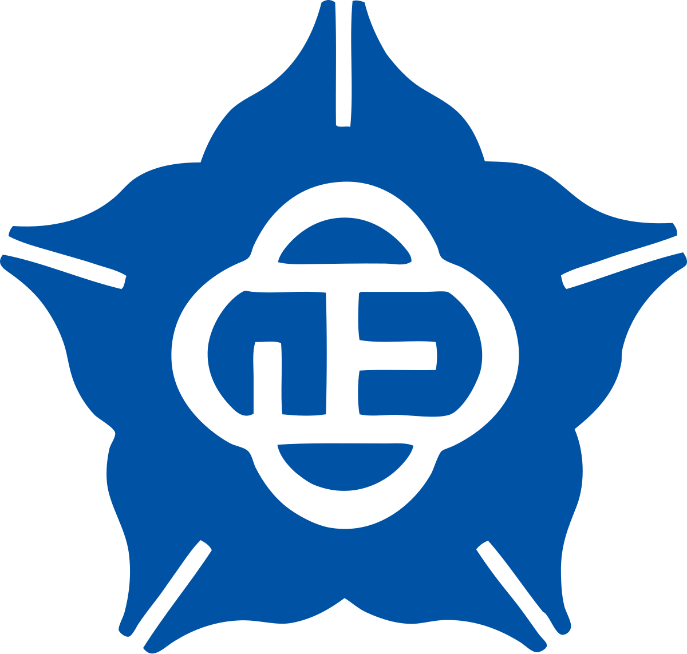
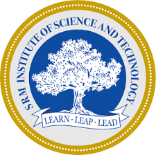
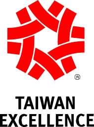

LLMs, VLMs, multi-agent orchestration, vector retrieval, evaluation loops
Senior AI Engineer • Agentic AI • GCP systems
Rahul Selvaraj
AI Engineer with 5+ years of experience designing, building, and deploying production AI systems for industrial and medical applications.
- Agentic workflows
- RAG systems
- Production AI on GCP

Current focus
Agentic AI systems, RAG pipelines, and reliable multimodal deployment on GCP
Engineering signal
Vertex AI, containerised services, CI/CD pipelines, REST APIs
Industrial automation, medical devices, assistive technology, real-time AI tools
About
Building production AI systems with strong engineering constraints, not demo-only prototypes.
I specialise in agentic AI, generative AI, and scalable AI delivery across industrial and medical environments. My recent work centers on multi-agent orchestration, RAG pipelines, LLM and VLM integration, and production-ready cloud deployment patterns.
I have co-invented two international patents across the USA, Europe, Taiwan, and India, and I focus on translating ambiguous business or product problems into reliable AI systems that can be monitored, maintained, and scaled.
Skills
Core stack across models, product engineering, and systems integration.
Agentic AI & GenAI
LLMs, VLMs, Whisper, RAG pipelines, agentic AI, multi-agent orchestration, prompt engineering, vector databases, model evaluation and monitoring.
Programming
Python as the primary language, with C++ for performance-sensitive and systems-oriented work.
Frameworks
PyTorch, TensorFlow, Keras, Hugging Face Transformers, LangChain, OpenCV.
Cloud & MLOps
Google Cloud Platform, Vertex AI, CI/CD pipelines, containerised deployment, REST APIs, FastAPI.
Tools
Git, GitLab, VS Code, Jupyter, and the delivery tooling needed for production AI iteration.
Applied contexts
Industrial automation, medical AI, assistive technology, multimodal workflows, and real-time human-AI systems.
Experience
Experience spanning enterprise AI deployment, medical-device software, and open-source research.
AI Engineer
- Designed and deployed a multi-agent orchestration system from architecture through CI/CD to production on Google Cloud.
- Built agentic AI tools with LLMs, VLMs, and multimodal models for real-time industrial workflows.
- Developed scalable AI pipelines on Vertex AI, connecting multiple services and internal platforms through REST APIs.
- Integrated open-source agent frameworks, including the OpenClaw ecosystem, into enterprise infrastructure.
- Implemented evaluation, monitoring, and guardrail mechanisms for reliability and compliance.
Senior Software Engineer
- Co-invented two international patents for AI-driven algorithms and sensor-based product designs.
- Developed AI-powered posture detection and pressure alert systems from embedded sensor data and machine learning models.
- Built cross-platform applications for end-users and internal testing around custom medical hardware.
- Automated actuator and sensor testing pipelines, reducing QA time by 90%, improving remote testability by 75%, and supporting CE and FDA compliance work.
Open-Source Contributor & AI Researcher
- Contributed to open-source LLM and RAG frameworks focused on agentic AI and real-time applications.
- Building a real-time audio translator for macOS and Windows using Whisper.cpp and Google Translate APIs.
Projects
Selected projects aligned to the current resume instead of a broad archive.
LLM Multi-Agent Planning System
Agentic orchestration platform using OpenAI GPT, Claude, LLaMA 2, and Mistral with RAG pipelines, vector databases, and Docker-based deployment.
Real-Time Audio Translator
Desktop translator for macOS and Windows using Whisper.cpp for live transcription and Google Translate APIs for low-latency translation.
Self-Supervised Depth Completion
M.Sc. thesis proposing a self-supervised framework that fuses sparse LiDAR point clouds and RGB images to improve 3D object detection on KITTI.
llm-rag-chatbot.py
RAG Chatbot
End-to-end retrieval-augmented generation with vector search and LLM orchestration.
benchmark.py
CAG vs RAG Research
Benchmark study comparing cache-augmented and retrieval-augmented generation strategies.
eval-suite.py
LLM Eval Suite
Evaluation framework for reasoning, factuality, and structured performance measurement.
agent-orchestrator.py
Compound AI Agents
Multi-agent orchestration for task decomposition, tooling, and execution control.
Education
Formal training across machine learning, electrical engineering, and instrumentation.

M.Sc. Electrical Engineering
Machine Learning — National Chung Cheng University, Taiwan | Sep 2019 – Sep 2021

B.Tech Electronics and Instrumentation Engineering
SRM Institute of Science and Technology, India | Jul 2015 – May 2019
Certifications
Only the certifications listed on the latest resume.
- Understanding Agentic AI
- Develop a RAG-based Solution with Azure AI Foundry
- Develop an AI App with Azure AI Foundry SDK
- Evaluate Generative AI Performance in Azure AI Foundry
- Master AI, Large Language Models & Agents
- LangChain for LLM Application Development
- Prompt Design in Vertex AI
- AI and Career Empowerment
Achievements
Resume-backed outcomes with specific signal and measurable impact.
02
International patents
Co-inventor of two international patents spanning the USA, Europe, Taiwan, and India.

Taiwan Excellence Award
2025 recognition tied to sensor-driven medical-device innovation and international product exhibition impact.
90%
QA automation reduction
Reduced manual QA time by 90% and improved remote testability by 75% through actuator and sensor test automation.